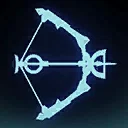

Omega (Fugitive)
A clever Support who Stealths and heals her allies from the shadows.
A clever Support who Stealths and heals her allies from the shadows.
Deal Special damage to target enemy. If any Bad Batch allies are Captive, progress their Rescue objectives by 5. Otherwise, the healthiest Bad Batch ally without Stealth gains Critical Avoidance Up for 2 turns.
Dispel all debuffs on all Bad Batch allies. Target ally recovers 100% Protection and an additional 15% Protection per Omega's Relic Amplifier Level. This is reduced by 5% per debuff dispelled.
For each 1% Protection recovery received while that ally has 100% Protection, they recover 1% Health.
For each 20% Health recovery received while that ally has 100% Health, they reduce their cooldowns by 1.
Remove Stealth from the healthiest Bad Batch ally, and all other Bad Batch allies gain Stealth until the end of the encounter, which can't be copied, dispelled, or prevented. If they already had Stealth, they instead gain 10% Turn Meter and an additional 5% Turn Meter per Omega's Relic Amplifier Level.
All Bad Batch allies gain Retribution, Riposte, and Tenacity Up for 2 turns. All Stealthed allies gain Advantage, Foresight, and Speed Up for 2 turns.

Bad Batch allies have +30% Critical Damage and Offense. At the start of the encounter, all Bad Batch allies gain Stealth until the end of the encounter (excluding the healthiest Bad Batch ally), which can't be copied, dispelled, or prevented. At the start of each character's turn, Stealthed allies recover 0.5% Health and Protection per Omega's Relic Amplifier Level. Stealthed Bad Batch allies can't be critically hit.
During a Bad Batch ally's turn, whenever a Bad Batch ally damages the same enemy or enemies that were damaged in the previous Bad Batch ally's turn, all Bad Batch allies gain a stack of Target Practice until the end of the encounter or unless they damage a different enemy while the previously damaged enemy is still active.
Omicron Boost : While in Grand Arenas if there are no Galactic Legends and all allies are Bad Batch: Whenever an ally is damaged by Expose or by an enemy with bonus Protection, all enemies receive damage equal to 1% of their Max Health for each stack of Target Practice on all allies. This damage can't be evaded and can't defeat enemies. Stealthed allies are immune to Damage Over Time and Plague, enemies they defeat can't be revived, and they take a bonus turn whenever they are Stunned or another ally falls below 100% Health.
Omega (Fugitive) has +50 Speed.
If Omega (Fugitive) is in the Leader slot, the first time each ally Omega (Fugitive), Batcher, Hunter (Mercenary), Wrecker (Mercenary), and Crosshair (Scarred) would be defeated:
- Remove all buffs and debuffs and they are inflicted with 10 stacks of Captive until the end of battle
- While Captive, they can't be targeted, they are immune to all damage, recovery, buffs, and debuffs, and they lose 1 stack of Captive whenever an ally takes a turn
- Bad Batch allies can contribute to their Rescue Objective
- If their Rescue Objective is met before they lose all stacks of Captive, they lose Captive and recover 100% Health and Protection; otherwise, they are instantly defeated
- If all allies are Captive this way, they immediately fail their Rescue Objective
- This effect persists through defeat
Captive: Speed set to 0, can't bonus attack or gain bonus Turn Meter
Rescue Objective: Gain 30 stacks of Target Practice